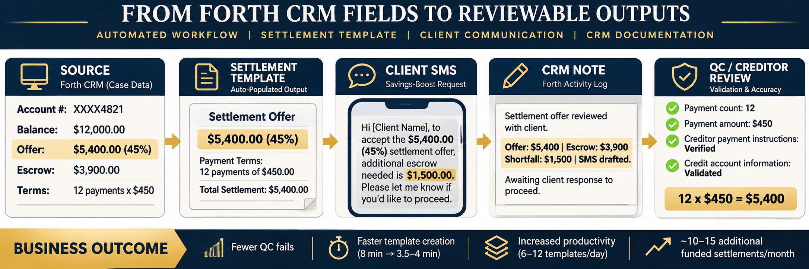

Anonymized professional project + fictional output simulation
Executive summary
This case study describes an independently developed, repeatable workflow for preparing settlement terms for internal QC and creditor review, alongside savings-boost SMS drafts and CRM activity notes. It combines structured operating procedures, CRM field mapping, business-rule checks, and Microsoft Copilot-assisted drafting. Reported operating outcomes include shorter preparation time, fewer quality-control failures, and additional funded settlements associated with savings-boost outreach. The public examples are fictional reconstructions, not employer records.
Business problem 1 — Manual settlement template preparation
Settlement templates were generated manually by staff on a case-by-case basis, using information displayed in Forth CRM. Because each template required human transcription and preparation, the process was vulnerable to frequent numerical and grammatical errors. Recurring issues included incorrect numbers of scheduled payments, individual payment amounts, creditor payment instructions, and credit account information. Each error required correction or rework and could result in a quality-control failure. I identified the relevant source fields in Forth and mapped each one to its corresponding location in the settlement template. This structured approach reduced manual transcription and avoided errors that could trigger internal QC failures or creditor rejection, improved the consistency and accuracy of settlement documentation, and supported faster preparation and greater productivity.
Business problem 2 — No standardized savings-boost SMS
There was no consistent SMS template for requesting additional client funds when the escrow balance was insufficient to accept a settlement offer. Drafting these requests manually required extra steps and time, and the message format varied. I applied the same Forth CRM data-mapping approach to generate a standardized, account-specific SMS. The message identified the additional funds needed and gave the client two options: contribute the shortfall as a lump sum or through installments, subject to the settlement deadline and applicable requirements. This made savings-boost outreach faster, clearer, and more repeatable.
Technical implementation
1. Identify required fields on the Forth CRM screen, including credit account information, payment count and amounts, creditor payment instructions, approved settlement amount, escrow funds, and communication status. 2. Map source fields to consistent template variables. 3. Apply SOP checks for offer eligibility, amount accuracy, missing data, and message tone. 4. Use structured inputs and Microsoft Copilot to prepare a settlement terms template for QC and creditor review, plus a client-facing savings-boost SMS and Forth activity note. 5. Reconcile settlement payment breakdowns to the offer and review all outputs against CRM source fields before submitting, sending, or recording; a human retains final approval. This is a description of a workflow, not a claim of direct API integration or unattended automation.
Visual workflow simulation

Illustrative graphic only. Sample identities and amounts are fictional; refer to the written scenario for validated arithmetic and outcome definitions.
Illustrative scenario and validation
Fictional account: XXXX4821. Account balance: $12,000.00. Negotiated settlement offer: $5,400.00 (45% of the $12,000.00 account balance). Payment breakdown: 12 monthly payments × $450.00 = $5,400.00. Available escrow: $3,900.00. Additional funding required: $5,400.00 − $3,900.00 = $1,500.00. Payment method: direct payment (illustrative). Creditor instructions: pending verification. These figures are fictional; the escrow shortfall is part of the settlement amount, not an additional charge.
Simulated output 1 — Settlement terms template (QC and creditor review)
NOT A CLIENT COMMUNICATION — FICTIONAL EXAMPLE CREDITOR ACCOUNT #: XXXX4821 CREDITOR REF #: DEMO-7842159 ACCOUNT BALANCE: $12,000.00 SETTLEMENT OFFER: $5,400.00 TERM: 12 months PAYMENT BREAKDOWN: 12 × $450.00 = $5,400.00 PAYMENT METHOD: Direct payment (illustrative) PAYMENT ADDRESS: Pending verification CHECK ADDRESS: Pending verification CONTACT INFO: Pending verification REVIEW STATUS: Draft — internal QC and creditor acceptance pending The structured settlement terms are checked by internal QC; relevant settlement amounts, payment schedules, and instructions are submitted for creditor review/acceptance. Errors may be returned by either reviewer for correction. No actual approval or submission is represented here.
Simulated output 2 — SMS
Hi Jordan, a settlement offer of $5,400 is available. With $3,900 currently in escrow, an additional $1,500 is needed to fund it. You may discuss adding the funds in one lump sum or in installments, provided the funds are available by the required deadline. Please reply or contact us to review your options. Fictional example.
Simulated output 3 — Forth CRM note
11/14/2026 — Simulated account review: approved offer $5,400; escrow $3,900; calculated savings-boost request $1,500. Settlement terms template and savings-boost SMS drafted for review. No client contact or funding is represented as having occurred. Status: pending human verification and outreach.
Quality-control and exception handling
Validate offer approval and expiration; verify that the payment schedule totals the settlement offer, that creditor instructions match the source, and that account/reference details are accurate; check subtraction and currency formatting; verify recipient and permitted contact channel; confirm required disclosures and communication rules; flag missing or conflicting data for manual resolution; review generated notes before posting. Do not publish actual account data, proprietary prompts, or internal SOP text.
Reported results and measurement boundaries
Preparation time improved from approximately 8 minutes to 3.5–4 minutes per template (a 50%–56.25% reduction in time). In one reported 30-day comparison, quality-control failures decreased from 47 to 14 (about 70.2% fewer failures). Typical throughput was reported as 6–12 templates per workday; no verified before-period throughput baseline is available. Savings-boost outreach was associated with approximately 10–15 additional funded settlements monthly. These observations are not controlled causal estimates and should not be interpreted as company-wide results.
Recommendations and lessons
Use a version-controlled field dictionary and SOP; require human review before client contact or CRM posting; log exceptions and corrections; track preparation time, QC failure rate with denominators, and funded outcomes over consistent periods; monitor privacy and compliance. The central lesson is that well-designed inputs and validation controls make AI-assisted drafting more reliable.
Skills demonstrated
Operations analysis · CRM data mapping · process design · SOP development · prompt design · Microsoft Copilot-assisted drafting · financial arithmetic · exception management · quality control · performance measurement.
Publication and confidentiality note
This public-facing case study is an anonymized narrative of professional process improvement, paired with independently invented sample data and messages. It does not reproduce employer-owned SOPs, private CRM screens, or actual customer records. The workflow illustration and all example amounts are fictional and internally reconciled.